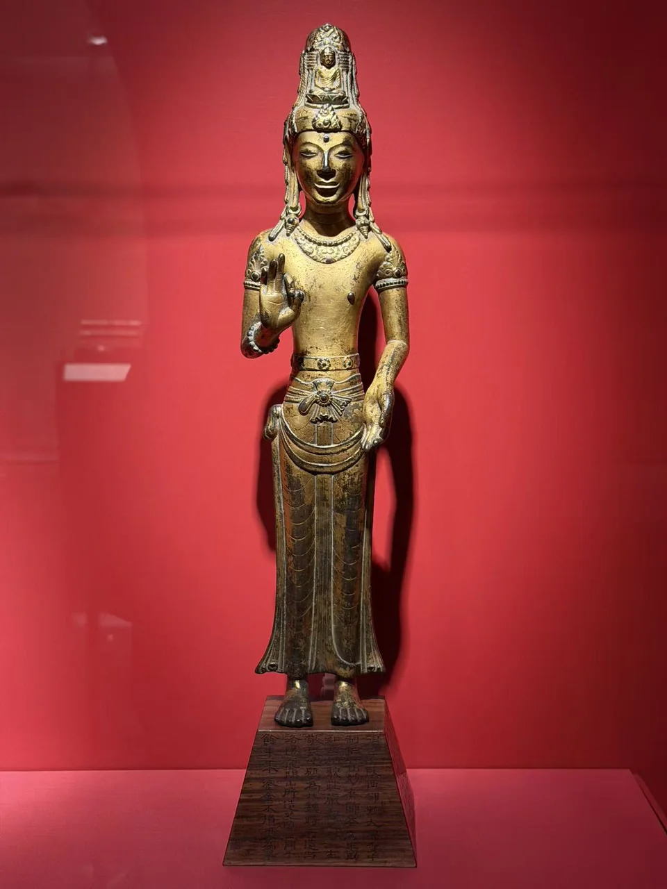
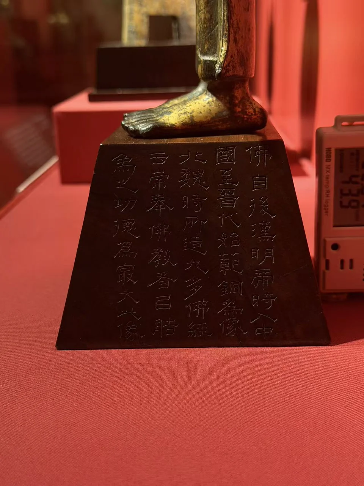
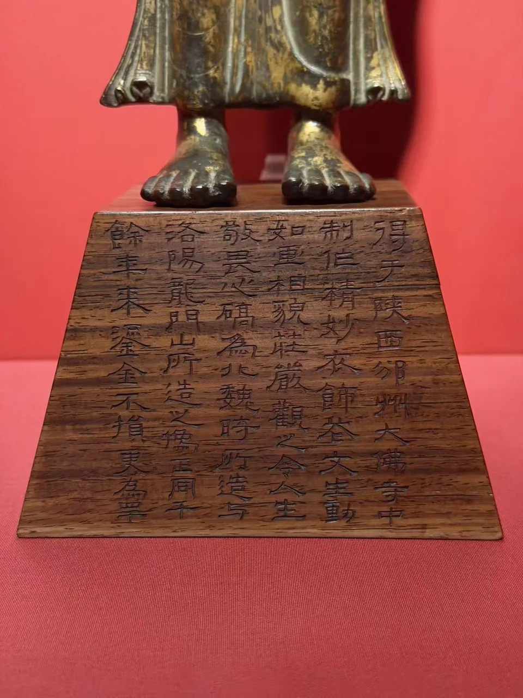
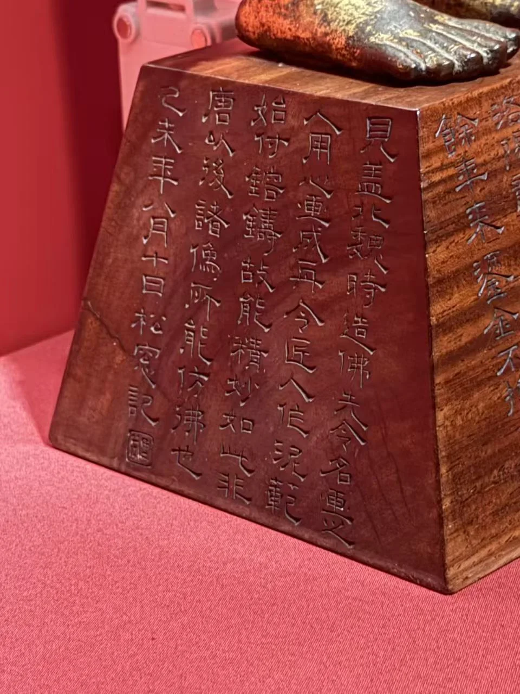
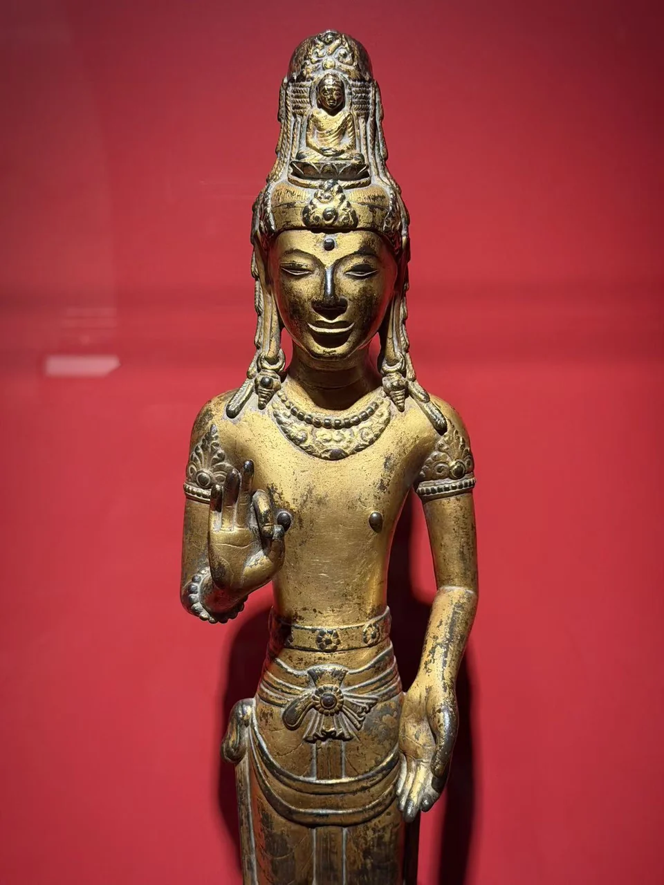
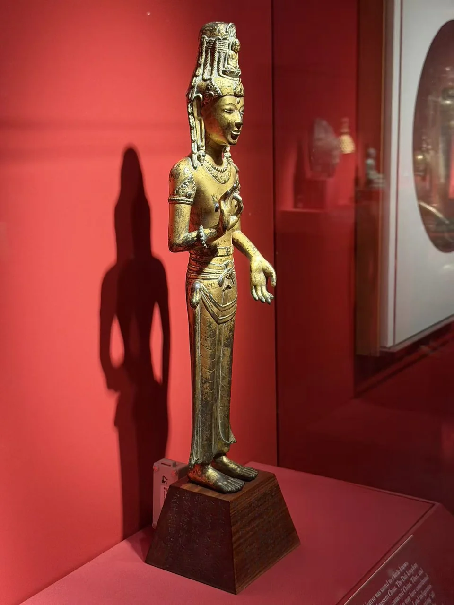
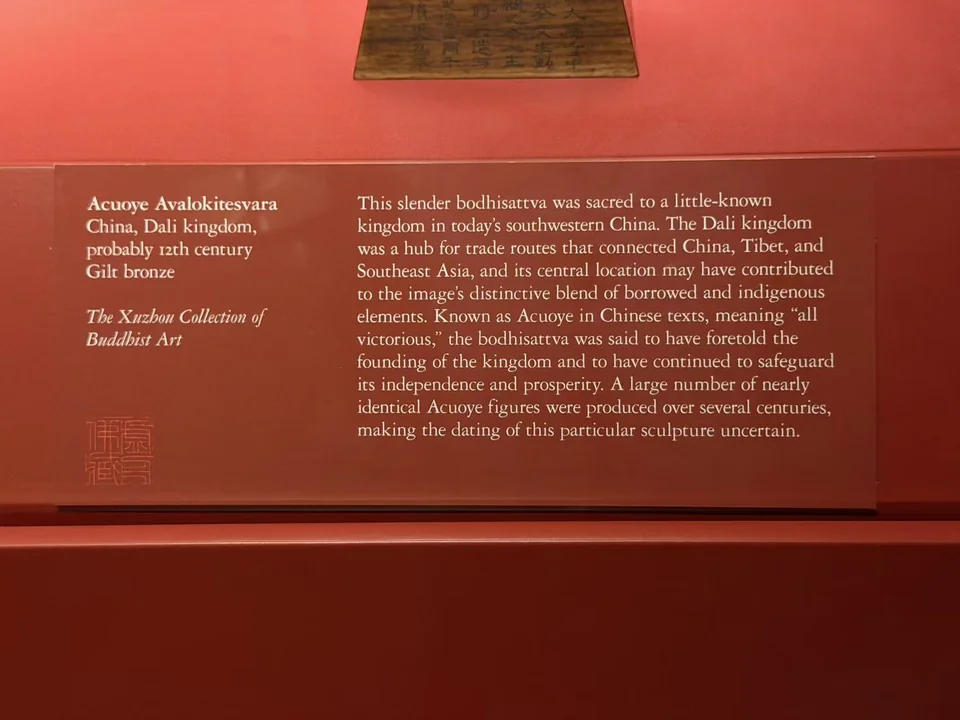

THE XUZHOU COLLECTION
阿嵯耶观音
Acuoye Avalokitesvara
细长的身形、高冠与几乎垂直的裙纹。

- 地区
- 中国云南
- 年代
- 大理国，可能为12世纪
- 材料
- 鎏金青铜
- 收藏
- 虚舟收藏（私人收藏）
- 观看地点
- 休斯顿美术馆（MFAH）
作品札记
从高冠到双足，像身保持修长、接近直立的轮廓。胸前璎珞较少，腰带和下裙的装饰反而更集中；裙纹垂直向下，衬出双手不对称的动作。与尼泊尔持莲观音的斜坐姿相比，这件更像以正面轮廓确立自身的形象。
馆方将其归于大理国，可能为12世纪，并把阿嵯耶观音联系到云南地区的护国信仰。大都会对同类造像的说明，也强调其修长比例及与东南亚传统的联系。这些是理解类型的参照，本件具体由谁供养、原来安置何处，尚无明确记录。
木座上的另一段历史
观音脚下的梯形木座，保存了另一套关于这尊像的理解。像身目前依馆方记录定为大理国、可能12世纪；木座上的“己未年八月十日，松窗記”，则对应1919年。相隔数百年的两种年代，分别属于造像与近代鉴藏。循着侧面、正面、另一侧的刻字读下去，能看到题记者如何描述佛像，又如何为它安排一个来历。
正面题记称“得于陝西邠州大佛寺中”，继而判断“確為北魏時所造”，并以“洛陽龍門山”造像作比较。另一侧还写道：“故能精妙如此，非唐以後諸像所能仿佛也。”在这套旧鉴定中，精细的造型与铸工被放进北魏艺术的参照里。寺名是题记所述的来源，尚非已经确认的考古出土地；“得于”也没有交代取得者是谁。
照片中的“松窗”落款，与佳士得2002年专文记载的“礼堂”印，共同指向褚德彝（1871—1942）。台北故宫资料确认，这位近代金石学家、书法家和篆刻家字松窗、号礼堂。将题记者判断为褚德彝，是综合可读落款、拍卖记录中的印记及人物资料所得；并非从现有照片中独立辨出了印文。
另据佳士得记载，木座底部有“陶斋珍藏”印，拍卖专文将它联系到端方，提示此像可能曾入端方旧藏。端方1911年去世，至1919年题记写成之间，作品如何流转仍不明确。两个人物的线索可以并列，却还不足以连成一次已知交易，也不能据题记确定褚德彝本人收藏过这尊像。
佳士得专文把这次旧鉴定放在云南造像比较研究尚未充分建立的背景中。如今展签将它重新放回大理传统，木座上的北魏之说却仍值得保留：它使一尊古代造像同时成为近代鉴藏的实物记录。细长身形、冠饰与裙纹属于对像身的观看，龙门、邠州和“松窗”的名字，则属于后来围绕它形成的认识与叙述。






公开拍卖记录
1992年12月1日
纽约苏富比，第192号。2002年本件佳士得记录在来源栏列出这一节点。
2002年9月20日
纽约佳士得，第193号。原拍品页与照片可核；像身、冠饰、腰带及刻字梯形木座与现场照片相合。
2011年3月24日
纽约佳士得，第1294号。Alain R. Truong于2018年转载的拍品资料附有与本件相合的造像及刻字木座照片，并列出1992、2002年的来源。
题记与递藏：资料注
照片对应：2002年照片和2011年资料转载图中的高冠化佛、胸前饰件、腰带、两侧裙缘及刻字梯形木座，与现场照片相合。
落款与印记：“松窗”落款见现场照片；“礼堂”及座底“陶斋珍藏”印的辨识来自拍卖专文，现有照片未清楚呈现。佳士得英文人名Song Xian、Zhu Deni存在转写疑点，褚德彝的身份判断结合台北故宫人物资料，不沿用其转写。
来源层级：佳士得3971569为本件2002年原始拍卖记录。2011年节点依据Alain R. Truong于2018年发表的拍品资料转载，附图与本件相合，但转载不能替代当年原始拍卖档案。
递藏空白：题记所称的陕西寺院来源、端方身后至1919年题记写成之间的递藏关系，以及何时进入虚舟收藏，尚无进一步证据。“得于”未指明取得者，也无证据支持褚德彝从端方遗藏购入的说法。
其他角度与细部




现场展签与原始记录

- 题名
- Acuoye Avalokitesvara
- 地区
- China
- 年代
- Dali kingdom, probably 12th century
- 材料
- Gilt bronze